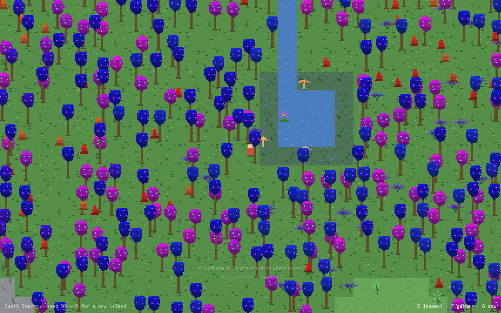
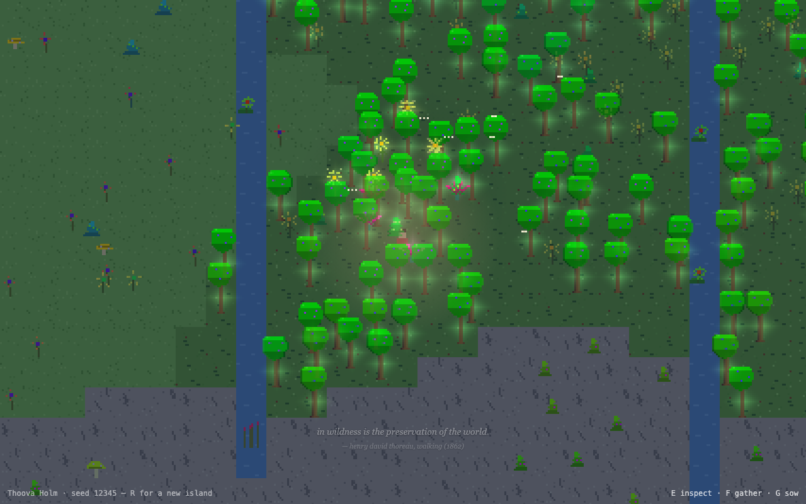
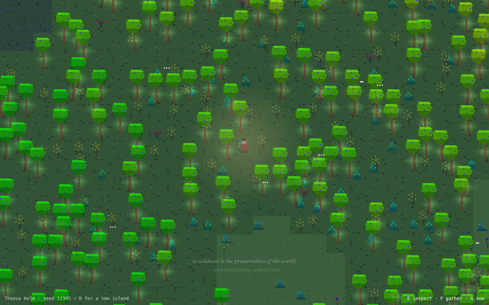
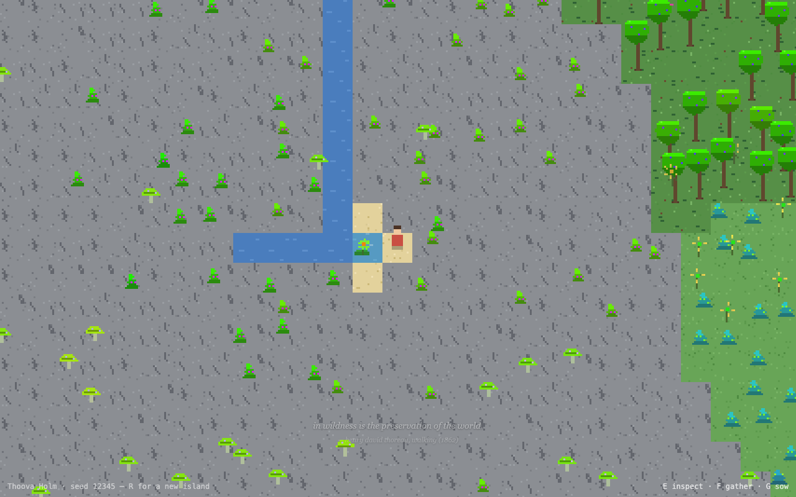
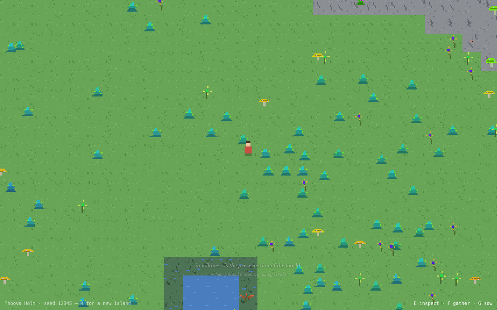
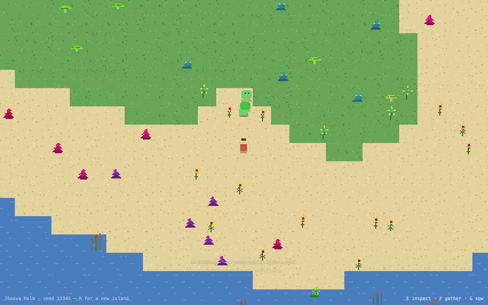
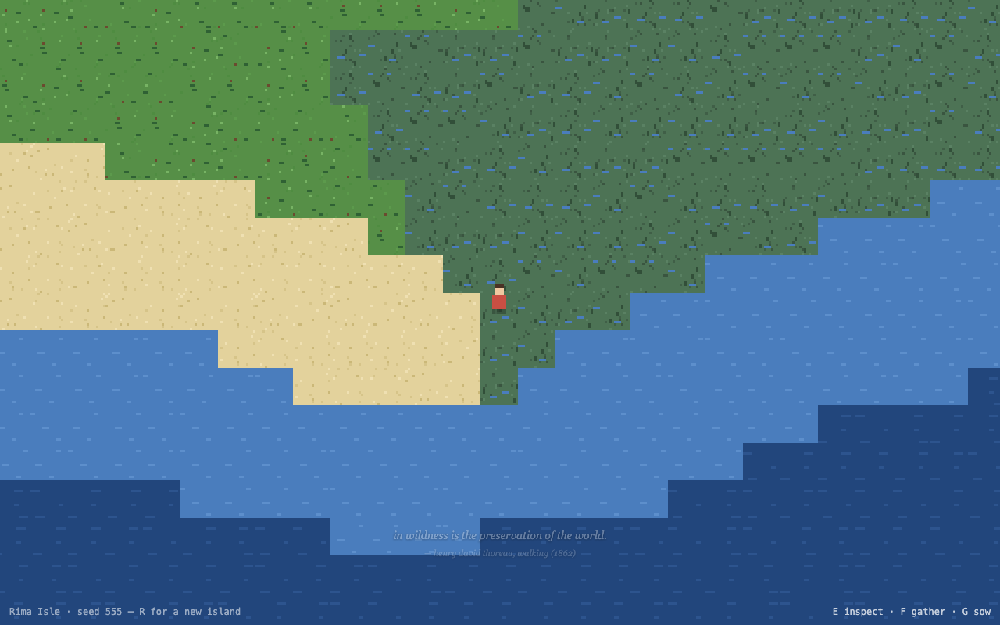
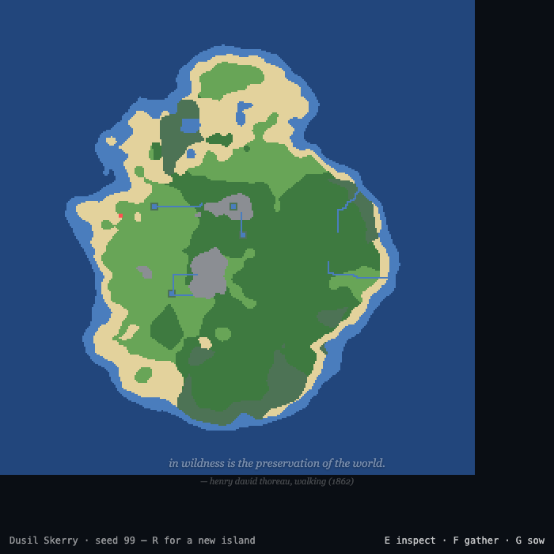

Good morning ☀️
While you slept, the island came alive. Here's what's waiting for you.
First, play
npm run dev # probably still running from last night
Open http://localhost:5173 — you'll land on a random island. WASD walk · E inspect · F gather · G sow · H found a home · P postcard · R new island (double-press; your world is saved). Days last ~4 minutes; stay out after dusk.
This page in its evening clothes: npm run report regenerates docs/morning-report.html from this markdown.
Worth visiting: ?seed=99 (the blue forest below), ?seed=12345 (two pockets, two springs, and Lulu), ?seed=555 (fenland island).
The tour
Dusil Skerry (seed 99) — no one chose these colors; the island's tree species just rolled indigo and orchid, and drift did the rest:

A pocket biome igniting at night (seed 12345, hidden between two rivers — ~60% of islands hide one, nothing marks them, you just find them):

The glow forest after dark — fungi light the understory and join into faint mycelium threads; the wanderer carries a small lantern:

A hot spring at the rock's edge — steam, a warm teal pool, and a water flower that colonized it on its own (shallow water is valid habitat; the systems compose):

Sanpo Tumbles at their den — every critter species loves one plant and dens where it grows:

Lulu, the old wanderer — seed 12345's beast. No den, no appetite, just an endless slow crossing. She glows at night. She will sometimes stop and look at you:

A fenland coast (seed 555) and an island overview (dev view, ?overview=1):


What shipped overnight
Everything is committed to master, 76 unit tests green, zero runtime dependencies, ~13 kB gzipped.
- World: named islands, per-seed silhouettes, rivers with deltas and pond-ring marshes, marsh biome, hot springs, hidden pocket biomes — every island now holds at least one pocket, and one island in five hides a single deep pocket instead: larger, denser, traits pushed further, faster shimmer, more spore motes
- Flora: 5 forms (flower/shrub/tree/fungus/fern, plus lily & reed aquatic forms), ~15 named species per island, genome drift in real time, cross-pollination (neighbors breed; planting is breeding), pocket amplification, one ✶ sport per island
- Fauna: 3 critter species with dens/foraging/curiosity/blinks; the beast; butterflies by day, moths by night; birds that wheel over the island, perch, roost at night, and flush when you walk in among them (Hopkins murmur); fish gliding in the shallows that scatter from your wading steps; frogs on the banksides that plop into the water with spreading rings when you come close
- Light: 4-minute days, glow genomes shining after dark, mycelium threads, cloud shadows, the lantern
- You: inspect panel with drift readings, seed pouch, sowing, postcards
- Murmurs: 20 gathered voices (Thoreau, Darwin, Bashō, Dickinson, Whitman, van Gogh…) surfacing at first-times: new biome, stillness, night, the sport, the beast, the spring
The full design record is in docs/superpowers/ (specs + plans) and the idea backlog in docs/ideas.md.
Your worlds are safe now
- Autosave. Every world saves itself (each 10s, on leaving, and before sailing): all the drifted genomes, your position, your seed pouch, your home. The last 8 worlds you visited are kept; revisit any via
?seed=N. - R asks first. Press R once and the island tells you it's saved and asks for a second press before sailing.
- Worlds live while you're away. When you return to a saved island, the time you were gone is simulated forward (up to ~4 hours of island time) — plants have reseeded, crossed, and drifted without you. This is the browser-only version of "keep a world running." If you want more, two honest roads: a small export/import of save files plus a headless node runner that ages a world on a schedule (the sim is pure TypeScript, so this is easy), or eventually a tiny server. Say which appeals.
- H founds a home. Press H on good ground: a 3×3 garden bed takes shape — corner stones, turned earth, a Frost murmur. Plants sown inside are tended: never thinned by crowding, and they breed twice as fast (with cross-pollination, your garden is a breeding bench). Genetics nudging — pick two parents, bias their cross — is sketched and waiting for you to go deep with me.
How this works (the fun version)
The whole game is one number growing consequences.
1. The seed feeds a hash; the hash feeds layered noise; the noise, shaped by a per-seed lopsided falloff, becomes elevation. Where water sits in it becomes sea, shore, marsh; where it rises becomes rock and snow. Rivers are just water obeying "step downhill" until it can't. 2. Species are rolled, not drawn. Each island generates ~15 plant species: a form (flower, shrub, tree, fungus, fern), a habitat, and an archetype genome — ten numbers (hue, height, petals, glow…). The pixel art is painted from the numbers at runtime; no sprite sheet exists. 3. Every individual drifts. Plants reseed with small mutations; nearby same-species plants cross, meeting in the middle of their traits (hues travel the short way round the color wheel). Geography plus time equals gradients you can walk through. Glow past a threshold and the plant literally lights up at night. 4. The island self-regulates. Past a comfortable density it quietly thins the commonest plants (never the rare ones, never your garden), so an old world stays composed instead of becoming jungle wallpaper. 5. Everything else listens. Critters den where their favorite plant thrives; birds flush from your footsteps; moths follow the glow; murmurs surface when a moment matches their tag. Nothing is scripted to happen at you — things happen near you, which is why it feels alive.
Same seed, same island, forever — your saves just remember what time and you did to it.
Decisions waiting for your taste
1. Field journal (J) — my top pick for the next step: a self-writing memoir of every species you've met, renameable, per-seed memory. 2. The wanderer's home — where does it live, what is it for? (My instinct: a porch, a garden bed, a place the camera rests — not a base.) 3. Critter trust — feeding favorites → follow → they lead you to secrets. How tame should wild things get? 4. Sound — generative wind/footsteps/critter motifs. Big mood win, real scope. 5. Cross-island seeds — should one pouch slot survive R? (Invasive species as gameplay.) 6. Anything on the island that made you feel something — tell me what, and that's the direction.
— written at the end of the night shift, with the loop still ticking
seas the color of #22467c · generated from docs/morning-report.md · npm run report